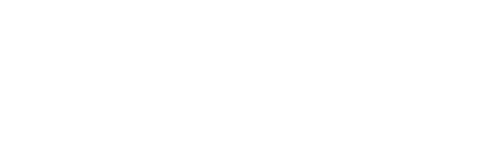
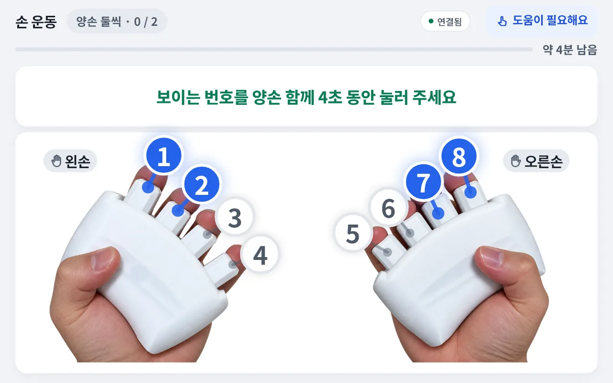
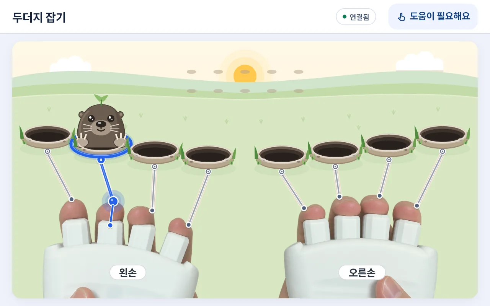
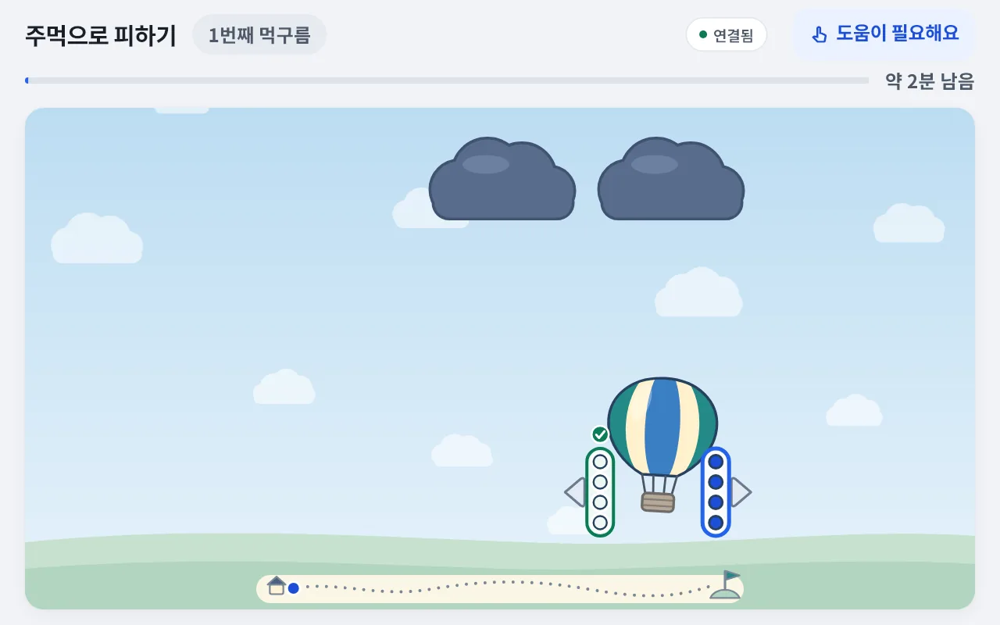
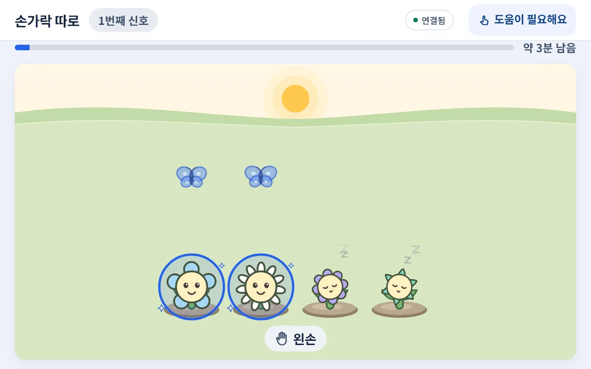
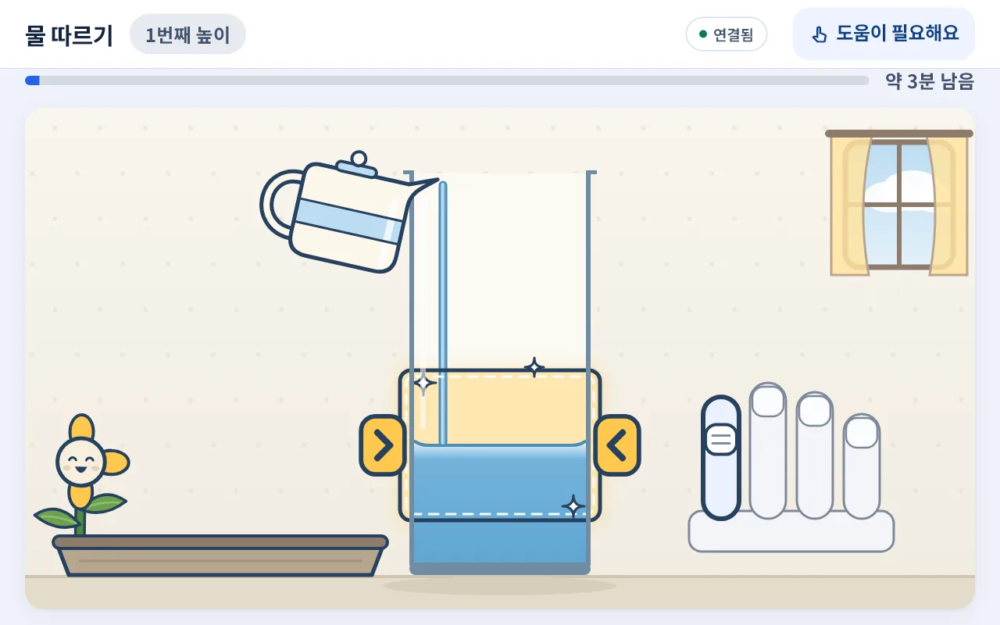
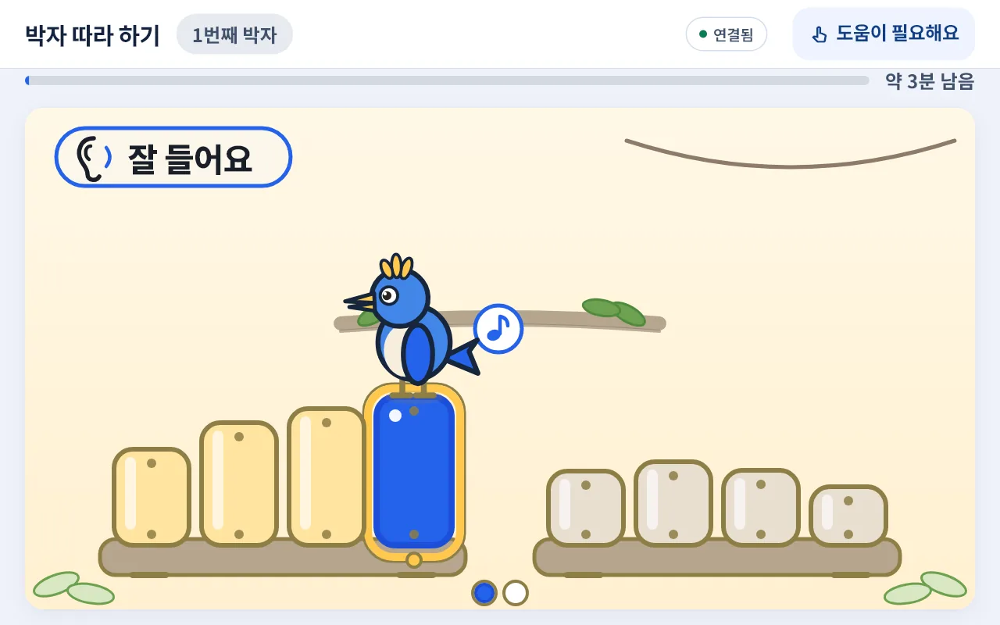

청기백기
26초“흰 깃발 올리지 말고 내려!” 구호를 듣고 왼손의 청기와 오른손의 백기를 올리거나 내려요.

출시 예정
Rehaptic은 손으로 조작하는 그립과 앱 콘텐츠를 연결해, 손가락마다 따로 누른 훈련을 반응·분리·조절·지속·박자·순서·협응 일곱 가지 영역으로 기록하는 디지털 훈련 기기입니다.
그립
누르는 강도는 레버마다 정해져 있습니다. 원하는 손가락의 레버를 본체에서 통째로 떼고, 다른 강도의 레버를 가까이 대어 붙입니다.
앱의 ‘그립 연결 점검’에서 손가락별 센서 거리(mm)와 보정된 눌림 깊이(%)를 확인할 수 있습니다.
화면·소리·불빛이 누를 손가락을 안내하고, 완전히 누르면 그립이 진동합니다.
손가락별 독립 입력과 햅틱 구조는 국내 특허 출원 중입니다(3건, 등록 전).
콘텐츠
활동을 골라 실제 앱 화면과 그립을 사용하는 방법을 살펴보세요.

켜진 번호의 손가락을 눌러 정해진 시간 동안 쥐고 있기. 지속 · 분리 · 협응

배경음에 맞춰 내려오는 동그라미를 제때 누르기. 박자 · 협응 · 지속

숫자를 보고 기억해 같은 순서로 누르기. 순서 · 분리

켜진 손가락을 눌러 올라온 두더지를 잡는 반응 놀이. 반응 · 분리

왼손 전체를 쥐면 열기구가 왼쪽으로, 오른손 전체를 쥐면 오른쪽으로 가며 먹구름을 피하기. 협응 · 지속

불이 켜진 손가락 하나만 살짝 누르고, 다른 손가락은 쉬게 두기. 분리 · 조절

레버를 누르는 깊이만큼 물을 따라, 노란 띠 높이에 맞추고 그대로 머물기. 조절 · 지속

들려주는 박자를 끝까지 듣고, 내 차례에 같은 박자로 누르기. 박자
다음 세대 그립으로 즐기는 게임입니다. 팔을 움직이거나 손을 쥐면 화면이 어떻게 반응하는지 영상으로 살펴보세요.
“흰 깃발 올리지 말고 내려!” 구호를 듣고 왼손의 청기와 오른손의 백기를 올리거나 내려요.
블록이 다가오면 팔을 움직여요. 쥔 손의 광선검은 켜지고, 손을 펴면 꺼져요.
왼손과 오른손을 번갈아 써요. 별에서 그립을 쥐고 다음 별까지 옮긴 뒤 손을 펴면 선이 남아요.
양손을 기울여 종이비행기의 방향을 맞춰요. 한 손만 쥐면 고리는 닫혀 있고, 두 손을 함께 쥐면 열려요.
왼손과 오른손을 올리고 내리며 두 음의 높이를 바꿔요. 두 손을 함께 쥔 동안에만 빛띠가 연결되고 화음이 울려요.
이 영상들은 개발 중인 콘텐츠의 개념 예시입니다. 출시 시 콘텐츠 구성과 일정은 바뀔 수 있습니다. 영역 이름의 뜻과 기록 값은 기술 페이지에서 볼 수 있습니다. 효능이나 치료 효과를 말하지 않습니다.
구성


구성 그림은 이해를 돕기 위한 개념 예시입니다. 태블릿 화면은 개발 중인 앱의 화면을 바탕으로 한 예시이고, 스마트폰 화면은 폰에 맞게 다시 짠 화면 구성 예시(개념)입니다. 화면 크기에 맞춰 화면 구성(UI)만 다릅니다.